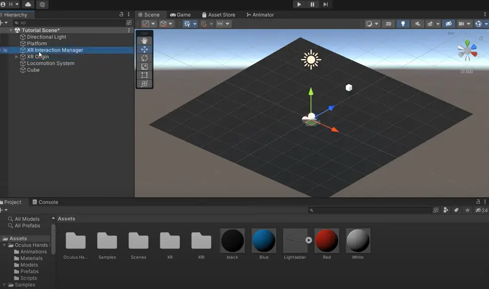
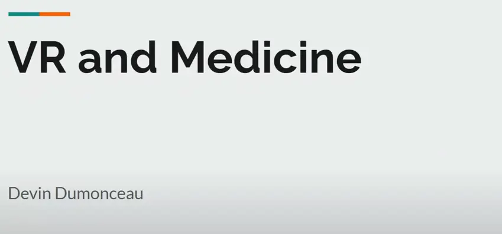
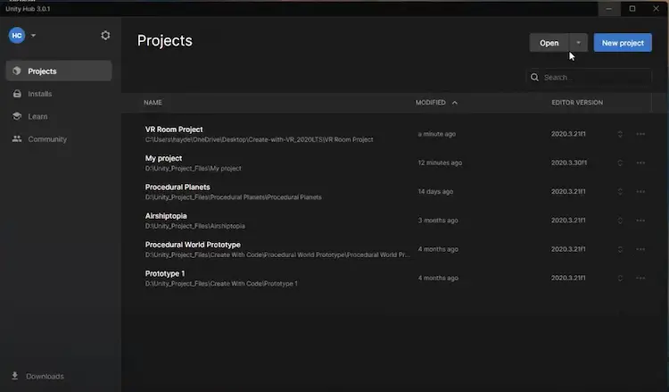

All Events
-

Basic VR Implementation
In today's event, we did not talk about any recent event, rather, Huy started the workshop directly. He introduced how to implement basic VR interaction using XR Interaction Toolkit.
-

Introduction to VR Implementation
In today's event, Devin went through recent event on VR and medicine, focusing on how to use VR technologies to create safer space between doctors and patients. VR technologies also enable doctors' ability to operate on patients utilizing special tools regardless the distance between them.
In today's workshop, Huy introduced how to use XR Interaction Toolkit to create VR environment, including the integration of Oculus Quest 2 controllers in Unity.
-

Introduction to VR Implementation
In today's event, Lu went through recent event on AR technologies, focusing on the the application of usage of AR in the real life, including gaming, product visualization, education, and so on.
In today's workshop, Hayden introduced how to create and set up a new VR project in Unity, including exploring the starter scene, adding background, and so on.